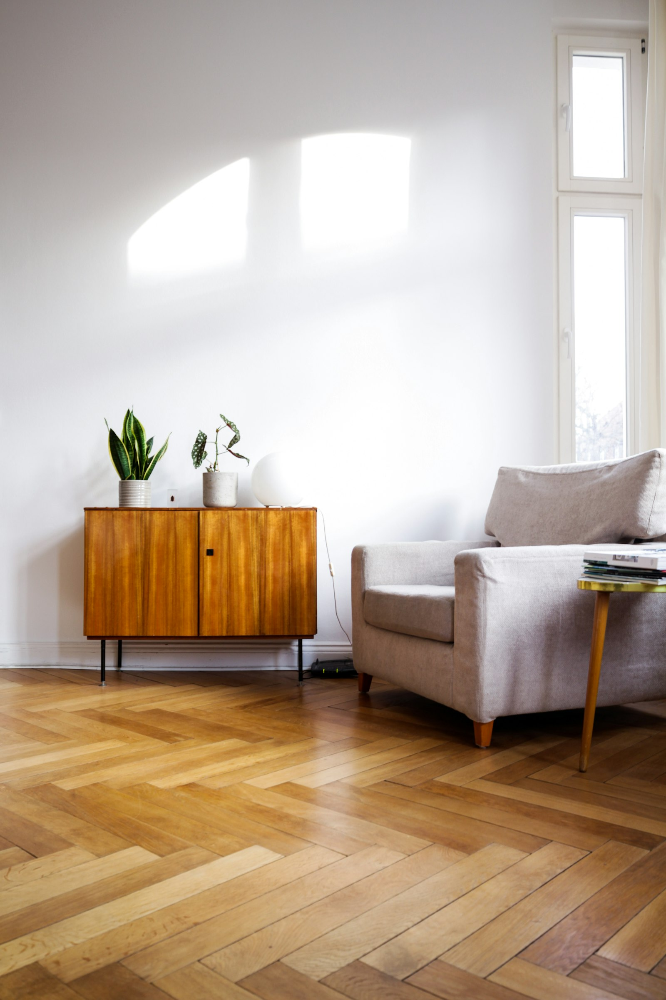
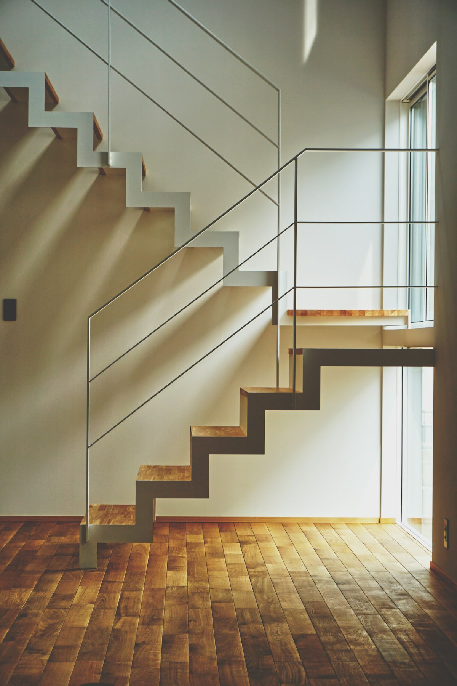
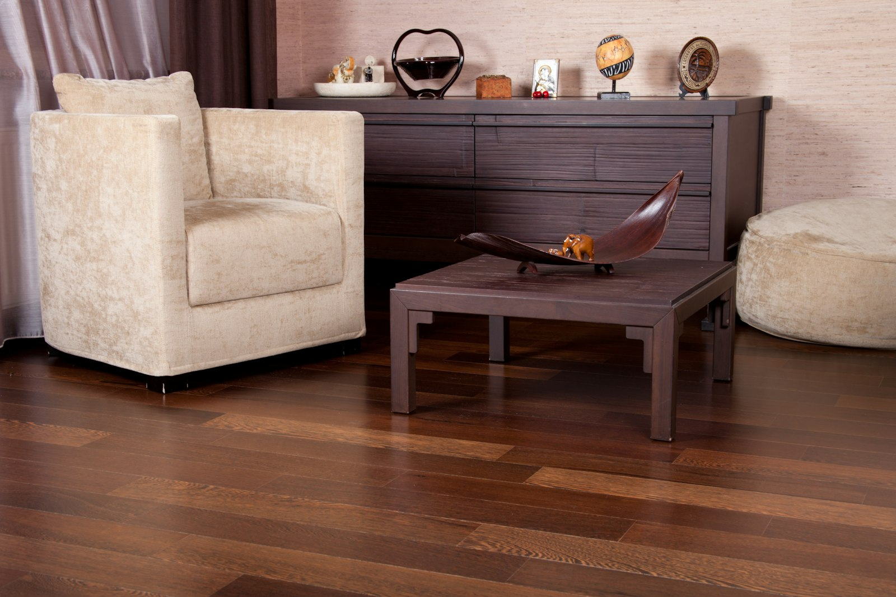

Vloeren die uw huis compleet maken
Laminaat, meubels, trapbekleding en raamdecoratie. Al 25 jaar adviseren, leveren en leggen wij met dezelfde zorg. Kies uw vloer online en wij regelen de rest.
Eén adres voor uw interieur
Van de vloer tot de raambekleding. Wij stemmen alles op elkaar af, zodat u niet met vijf partijen hoeft te schakelen.

Vloeren
PVC en laminaat in plank, visgraat en tegeldessin. Geleverd en gelegd.

Trapbekleding
Trap renoveren in de stijl van uw nieuwe vloer, vaak binnen één dag.

Meubels
Banken, fauteuils en kasten die passen bij uw vloer en ruimte.
Raamdecoratie
Gordijnen, vitrage en jaloezieën op maat gemaakt en opgehangen.
Uit onze collectie
Bestel direct online. Vul de afmetingen van uw ruimte in en wij rekenen het aantal pakken voor u uit.


Vakmanschap dat u terugziet in elke naad
Ideaal Meubel & Vloer is een familiebedrijf dat al vijfentwintig jaar woningen afmaakt. Wij geloven dat een interieur pas klopt als vloer, trap, meubels en ramen bij elkaar passen.
- Persoonlijk advies in de showroom of bij u thuis
- Eigen leggers, geen onderaannemers
- Gratis inmeten bij een complete opdracht
- Heldere prijzen, vooraf vastgelegd
Wat klanten zeggen
Super goede ervaring gehad bij Ideaal Meubel & Vloer. Wij hebben een PVC vloer laten leggen en zijn erg tevreden met de kwaliteit en service. Ze doen er alles aan om je tevreden te maken als klant, zijn enorm betrouwbaar en leveren top service en goede nazorg. … Echt een aanrader!
Al in de winkel werden we meteen heel fijn geholpen, en kregen we goed en eerlijk advies. De vloer is in een dag gelegd, en we zijn heel blij met het resultaat! Super netjes (ook de plinten en de afwerking erg netjes), hele vriendelijke service, en een heel eerlijke prijs.
Ontzettend goed geholpen door Kazim. Blij met mijn nieuwe pvc visgraat vloer. Afspraken werden nagekomen en alles werd duidelijk uitgelegd. Een aanrader!
Topservice van Ideaal Meubel! Onze trap en laminaatvloer zijn perfect geplaatst. Strakke afwerking, oog voor detail en alles netjes achtergelaten. Betrouwbaar en professioneel, absoluut een aanrader!
Hier heb ik twee trappen laten bekleden waar ik zeer tevreden mee ben! Beide trappen zijn in een halve dag afgemaakt en dat door enkel 1 persoon. Al met al vakmanschap, komt afspraken na, kwaliteit, eerlijke prijs en goed advies tijdens het maken van de keuze.
Onlangs is onze PVC droomvloer (visgraat) gelegd door het team van Ideaal Meubel. Onze verwachtingen zijn echt overtroffen! … We zijn erg detail gevoelig, maar de afwerking is echt netjes. De randen zijn strak afgewerkt. … Niet geheel onbelangrijk: ze ruimen alle spullen netjes op.
Zo bestelt u uw vloer
Kies uw vloer
Bekijk de collectie online of kom langs in de showroom om de vloeren in het echt te voelen.
Vul uw maten in
Wij rekenen het aantal pakken uit, inclusief 10% snijverlies (bij visgraat 15%). Twijfelt u? Wij meten graag in.
Verstuur de aanvraag
U betaalt nog niets online. Wij bellen u om levering, leggen en betaling te bevestigen.
Wij leveren en leggen
Op de afgesproken dag. Strak afgewerkt met plinten en netjes opgeruimd.
Eerst goed geïnformeerd
Antwoorden op de vragen die wij in de winkel het vaakst horen.
Hoeveel laminaat heb ik nodig?
Meet de vloer in vierkante meters, tel daar snijverlies bij op en rond af naar hele pakken. Reken bij een rechte plank met ongeveer 10% extra en bij visgraat of een ruimte met veel hoeken met ongeveer 15%. Deel een L-vormige ruimte op in rechthoeken en tel die bij elkaar op.
Lees verder KiezenLaminaat of PVC: wat past bij u?
Laminaat is harder en krasvaster en voelt aan als een houten vloer. PVC is zachter en stiller, voelt warmer aan en kan zelf niet tegen water stuk. Kies laminaat voor een sterke, krasvaste vloer in woonruimtes en PVC als geluid of veel water de doorslag geeft.
Lees verder KiezenVisgraat laminaat: patroon, A- en B-planken en leggen
Visgraat laminaat bestaat uit korte rechthoekige planken die in een zigzagpatroon haaks tegen elkaar worden gelegd. Daarvoor zijn twee soorten planken nodig, A en B, met een gespiegelde klikverbinding. Reken op ongeveer 15% snijverlies en op meer legwerk dan bij een gewone plankenvloer.
Lees verderKom langs of laat ons bij u langskomen
Kom langs in onze winkel aan de Jan Evertsenstraat in Amsterdam-West, of bel voor een vrijblijvende inmeting bij u thuis. Wij denken graag mee over de vloer die bij uw woning past.
- Telefoon020-7526672
- E-mailinfo@ideaalmeubel.nl
- Instagram@ideaalmeubel
- WinkelJan Evertsenstraat 10H
1056 EC Amsterdam
Openingstijden
- Maandag10:00 - 18:00
- Dinsdag09:00 - 18:00
- Woensdag09:00 - 18:00
- Donderdag09:00 - 20:00
- Vrijdag09:00 - 18:00
- Zaterdag09:00 - 18:00
- Zondag12:00 - 17:00